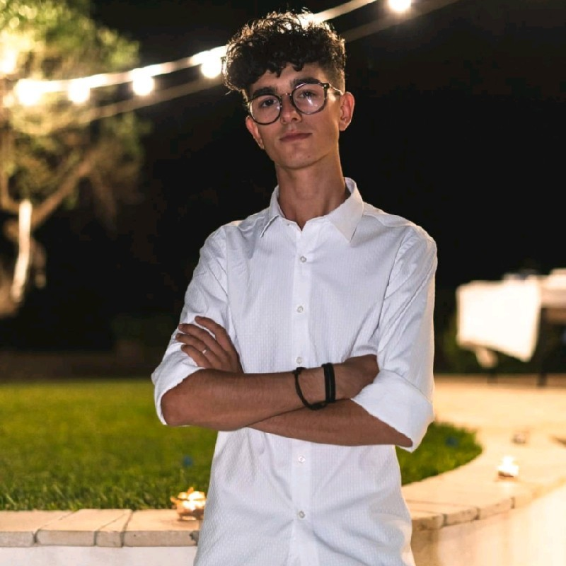

Frontier research that ships.
I design AI systems at the intersection of deep learning, multi-agent architectures and human-centered personalization — from published research on adaptive agentic models to production data science.
About

AI Engineer specializing in Computer Vision, NLP and Quantum Computing, bridging cutting-edge research with real-world applications.
From multi-agent systems to hybrid quantum-classical models, I operate at the intersection of theoretical computer science, software engineering and high-performance computing — developing scalable AI solutions that tackle real-world challenges.
Research · Publication
JARVIS: Adaptive Dual-Hemisphere Architectures for Personalized Large Agentic Models
Adjunct Proceedings of the 33rd ACM Conference on User Modeling, Adaptation and Personalization
JARVIS proposes a novel approach to endow LLMs with enhanced personalization through a two-hemisphere architecture inspired by the biological organization of the human brain. Following a Large Agentic Model (LAM) design, the subjective hemisphere dynamically models user preferences and iteratively optimizes behavior via LoRA, Direct Preference Optimization, human feedback and synthetic data generation ("digital dreams").
Selected Work
An advanced multi-agent AI system built with LangChain and LangGraph featuring persistent memory and adaptive learning. JARVIS understands context, learns from interactions and performs complex tasks through a network of specialized agents working together.
A computer-vision system using multimodal AI to generate descriptive captions for differences between artwork images, leveraging CLIP and transformer architectures to express visual change in natural language.
A hybrid quantum-classical model for clustering on MNIST, exploring quantum circuits to enhance metric learning for image clustering.
A novel approach for Autism Spectrum Disorder detection through microbial analysis using Autoencoders and Decision Trees, processing microbiome data to surface diagnostic patterns.
A machine-learning pipeline for breast-cancer classification on the Wisconsin Diagnostic dataset, using feature engineering and ensemble methods (XGBoost) to classify malignant and benign tumors from cell-nuclei characteristics.
A classification system on the UCI Garment Manufacturing Productivity dataset predicting productivity levels via Random Forest, SVM and Gradient Boosting.